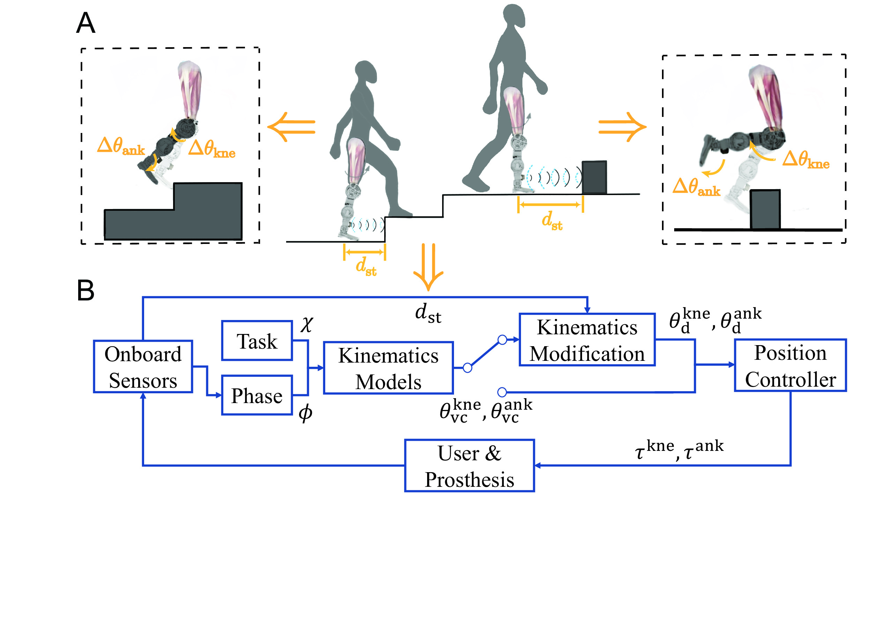
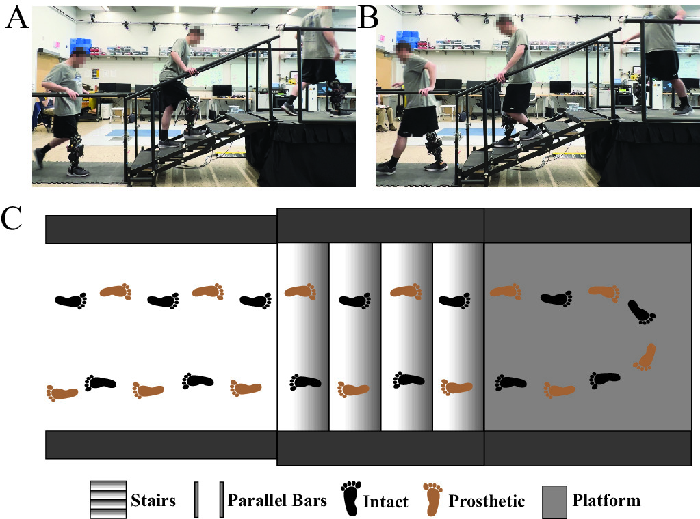
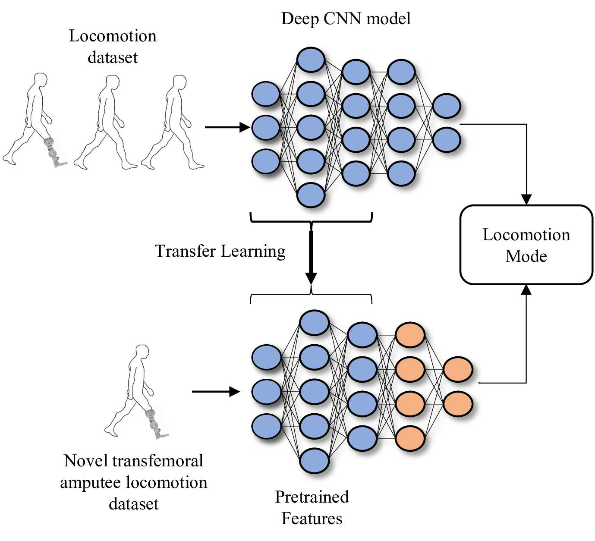
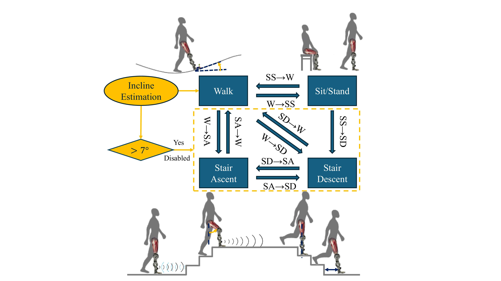
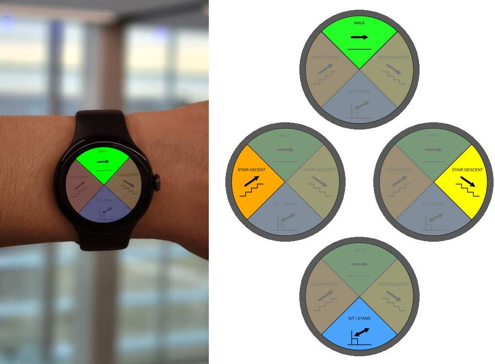

部署与荣誉
机器人系统落地真实场景，研究成果获顶级学术认可。
关于
研究 → 落地
我让可穿戴机器人不那么"像机器人"。
我的工作融合控制、嵌入式系统与机器学习，帮助机器人设备在毫秒内理解人体运动意图。 我专注于将算法从仿真推向量产——在那里，安全、可靠与真实世界的复杂性才是最终考验。
我喜欢构建这样的系统：用户感觉简单，是因为底层工程远不简单。
最新动态
近期更新
- 🚀 发布 2026年4月 由我参与传感与控制工作的 Moonwalkers Aero，已在全球 IKEA 仓库部署。
- 🎓 里程碑 2025年9月 参与搭建 20 摄像头动捕与 Bertec 跑台实验室，并基于该平台主导控制与传感方向的研发与验证。
- 🎓 里程碑 2025年5月 任命为 Shift Robotics 首席控制工程师，负责首款轮式外骨骼动力鞋的控制与传感系统开发。
- 📄 论文 2025年1月 论文 "Ambilateral Activity Recognition and Continuous Adaptation With a Powered Knee-Ankle Prosthesis" 发表于 IEEE Transactions on Robotics。
- 🎓 里程碑 2024年6月 完成博士论文答辩：《动力膝踝假肢在连续与自动活动转换中的控制方法》。
- 🏆 奖项 2023年10月 因动力假肢连续转换控制研究获得 IROS 2023 最佳学生论文奖。
- 🏆 奖项 2023年4月 获得密歇根大学 Rackham 预博士奖学金。
- 🎓 里程碑 2021年5月 获得密歇根大学机械工程与机器人双硕士学位。
- 🏆 奖项 2018年12月 普渡大学 Senior Design 项目获得 Malott Innovation Award。
- 🎓 里程碑 2018年12月 以 Distinction 荣誉获得普渡大学机械工程学士学位，辅修数学与经济学。
精选项目
可穿戴机器人 • 人机交互
Moonwalkers 控制系统（ShiftOS）
量产Moonwalkers 已在全球 IKEA 仓库部署
为可穿戴动力鞋打造实时运动控制系统，并完成嵌入式量产部署。
- 平衡感知控制与不平路面稳定性
- 低延迟状态切换与安全约束
- RTOS 集成与可靠性加固

安全关键绊脚规避（TBME 2024）
科研发表于 IEEE TBME 2024
基于实时预测与最小跃度轨迹重塑，实现对障碍接触的安全规避。
- 与连续控制兼容的安全干预
- 多传感器输入（运动学 + 距离）

连续转换控制（TNSRE 2024）
科研IROS 2023 最佳学生论文奖
在平地与楼梯之间生成连续轨迹，对意图延迟与时序误差更鲁棒。
- 相位对齐的参考轨迹生成
- 覆盖多种跨腿转换场景

迁移学习意图预测（RA-L 2024）
科研发表于 IEEE RA-L 2024
在数据受限条件下，实现对新用户的快速意图适配与泛化。
- 预训练 + 微调策略
- 跨用户泛化与传感器分析

双侧活动识别（TRO 2025）
科研IEEE Transactions on Robotics · TNSRE 2021
面向动力假肢的可解释 ICF 意图识别框架，扩展至双侧传感，支持多活动模式的持续自适应控制。
- 生物力学可解释特征，无黑箱嵌入
- 实时分类（<5 ms），双侧步态估计

智能手表手势控制（EMBC 2025）
科研发表于 IEEE EMBC 2025
基于智能手表的人机交互接口，通过手势指令与振动触觉反馈实现动力假肢的显式模式切换。
- 四种步行模式映射至滑动手势
- 振动触觉确认反馈，TCP 通信连接假肢控制器
步行中的隐藏工程
点击阶段，看机器人如何思考。
经历
精选岗位
Shift Robotics
首席控制工程师（2025–至今）
- 面向不平地形的平衡感知控制，提升行走稳定性
- 低延迟、无缝切换的混合行走模式设计
- 运动捕捉实验室与数据集流水线，用于学习型控制
步态控制工程师（2024–2025）
- ShiftOS 3.0 / 3.1 固件开发与嵌入式系统部署
- 基于 EKF 的地形估计与低延迟用户意图识别
密歇根大学
博士研究员（2019–2024）
- 多活动假肢控制与行走模式切换
- 基于可解释机器学习的意图识别与跨用户自适应
- 面向障碍规避的环境感知与安全干预机制
- MuJoCo 数字孪生建模与仿真到现实个性化
教育背景
学位
- 机器人学博士，密歇根大学（2019–2024）· LocoLab，导师：Robert D. Gregg 教授
- 机械工程与机器人双硕士，密歇根大学（2019–2021）
- 机械工程学士（Distinction），普渡大学（2015–2018）
联系
欢迎交流